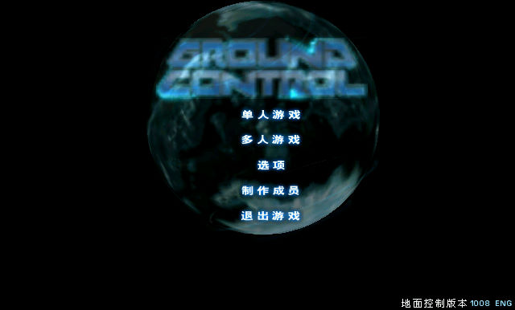
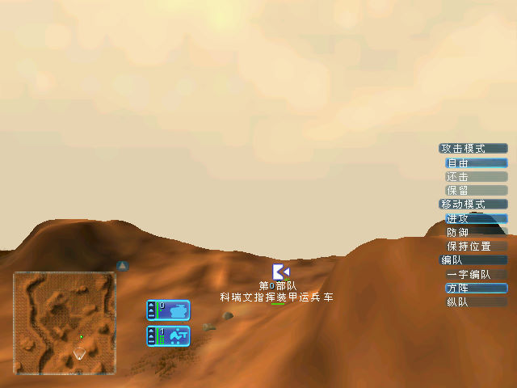
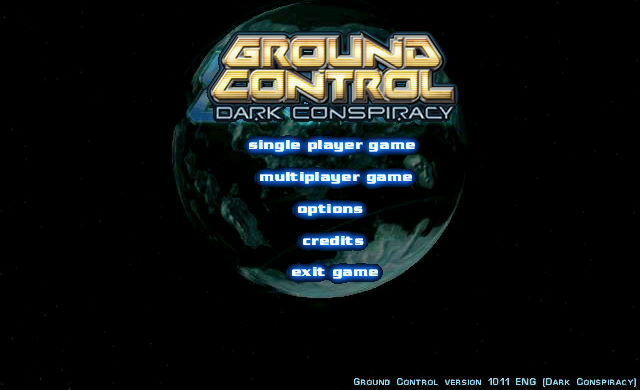

名稱：地面控制1 (Ground Control，簡中／英文版)
簡介：Massive 2000年出品的即時戰術遊戲，由Sierra代理發行，大陸則由奧美簡中化並代
理發行，同年推出「黑暗陰謀（Dark Conspiracy）」資料片 [待補]。



保護：光碟SecuROM 4.01+序號（RAC2-RAL2-CAS3-RAD3-3542），資料片為光碟SecuROM 4.18
備註：簡中版英文光碟為1.0.0.8版，其安裝過程為：
1.Windows系統的Fonts目錄內必須有SIMSUN.TTF，否則會視為非簡中系統不允許安裝。
2.放入簡中漢化光碟，執行[地面控制漢化包]\AutoGSoo.exe。
3.出現[請插入地面控制安裝光盤]時，放入英文光碟，按下[是]，此時會安裝英文版，安裝
後自動進行簡中漢化。
限制：簡中版只能在Win9x系統上執行（DirectX 7以上），且必須為簡中系統，否則會漏字。
備註：資料片安裝完為1.0.1.1版，需以"gc.exe -mod DARKCONS"方式啟動，無中文版。
檔案：Patch1011.rar = 主程式1.0.1.1英文更新檔
SimSun.rar = SimSun.ttf字型檔
nocd1008.rar = 主程式1.0.0.8免光碟檔
nocd1011.rar = 主程式／資料片1.0.1.1免光碟檔